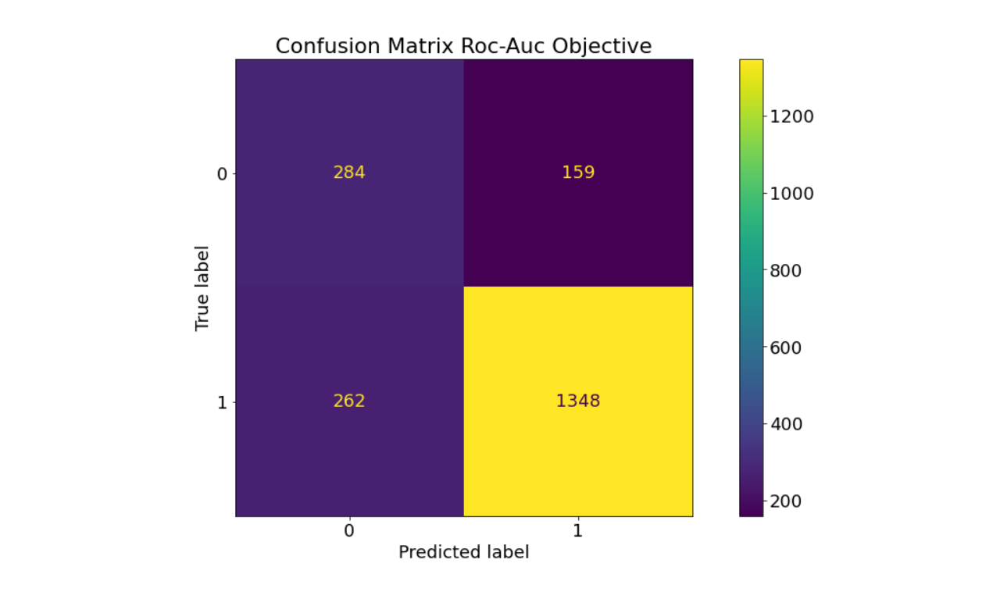
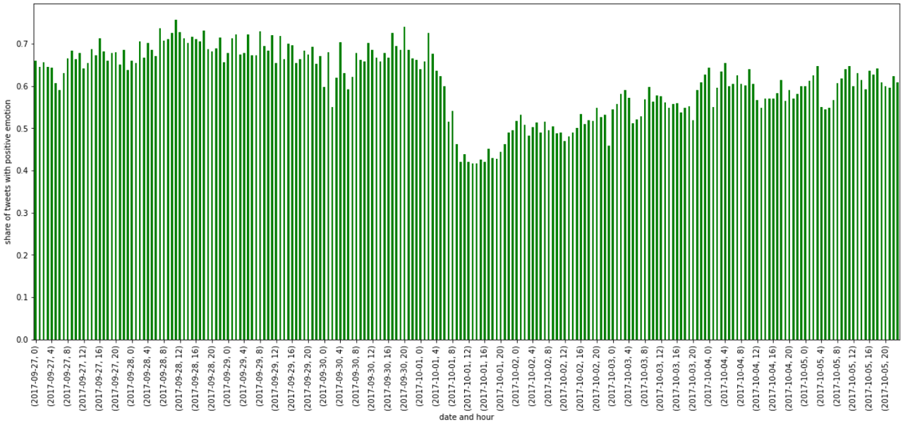

Emojis as Labels & ROC-AUC vs. Average Precision
This work is a joint project with Lennart Struth and was submitted to the Barcelona School of Economics of the Pompeu Fabra University, receiving the highest possible grade A+. The task consists of labeling tweets based on emojis and subsequently training an algorithm to detect positive or negative emotions in tweets. This algorithm is eventually used to classify around 300,000 unseen Spanish tweets from the fall of October 2017. This is to investigate the mood in Spain following police brutality in the wake of the Catalan referendum movement. The data is confidential as it is part of an ongoing study at the Barcelona School of Economics. The purpose of this project is to discuss the methodology and performance in terms of ROC-AUC vs. Average Precision, which is done in a notebook on GitHub (see below).
 Extreemly Randomized Trees performed particularly well in our setting, this is the corresponding confusion matrix. The results are surprisingly strong considering that we were only able to label 10,000 tweets based on the emojis and that the sample is unbalanced between positively and negatively labeled tweets in the ratio of 3.5 to 1. Handling small training data and imbalanced samples is explicitly discussed in this project on GitHub. The fact that Extreemly Randomized Trees performed well under these circumstances is not surprising since the model has several advantageous properties relevant to our use case. For example, compared to the Random Forest Classifier, it reduces bias by sampling from the entire dataset when creating the trees. Moreover, it reduces variance by adding randomization so that the algorithm is less influenced by certain features or patterns in the dataset. Finally, it is computationally faster, which is a great advantage when working with text data.
 The figure on the right shows the percentage of tweets classified as positive per hour. Again, the results are surprisingly sharp. We observe a steep drop on October 1, 2017, the day Spanish police tried to use violence to prevent voting in Catalonia. It seems to take some time for the percentage to return to its previous level. Which might be an interesting observation in itself.
If you are interested in the implementation details or a discussion of the performance in terms of ROC-AUC and Average Precision, please get in touch or check out the details on GitHub.